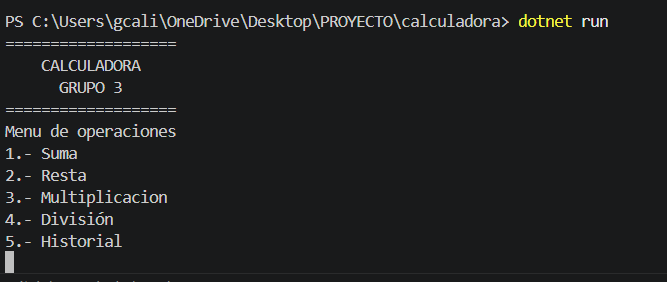
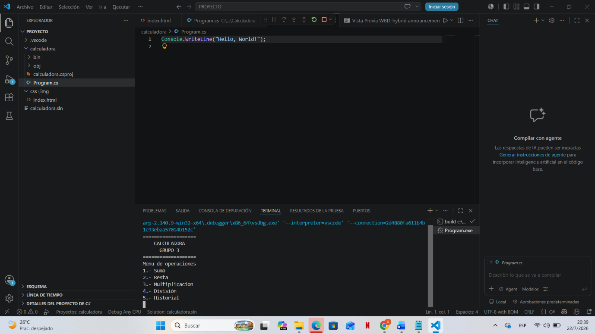
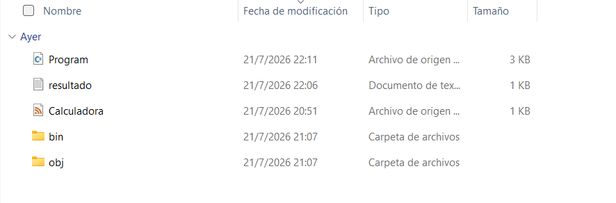
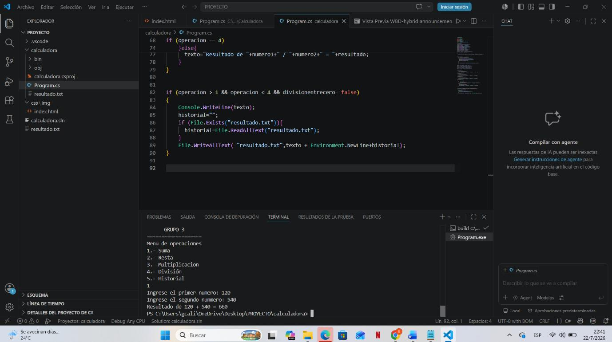
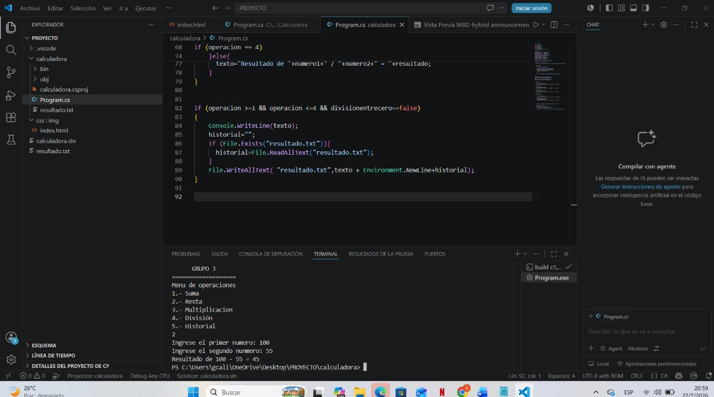
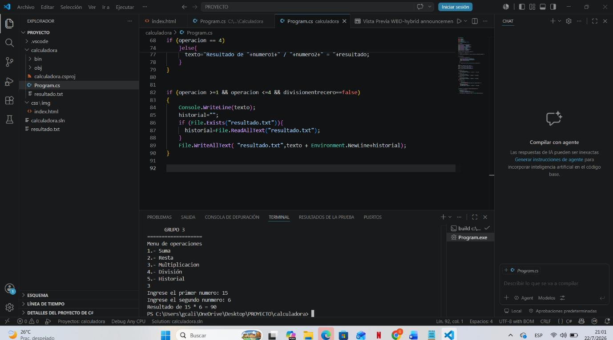
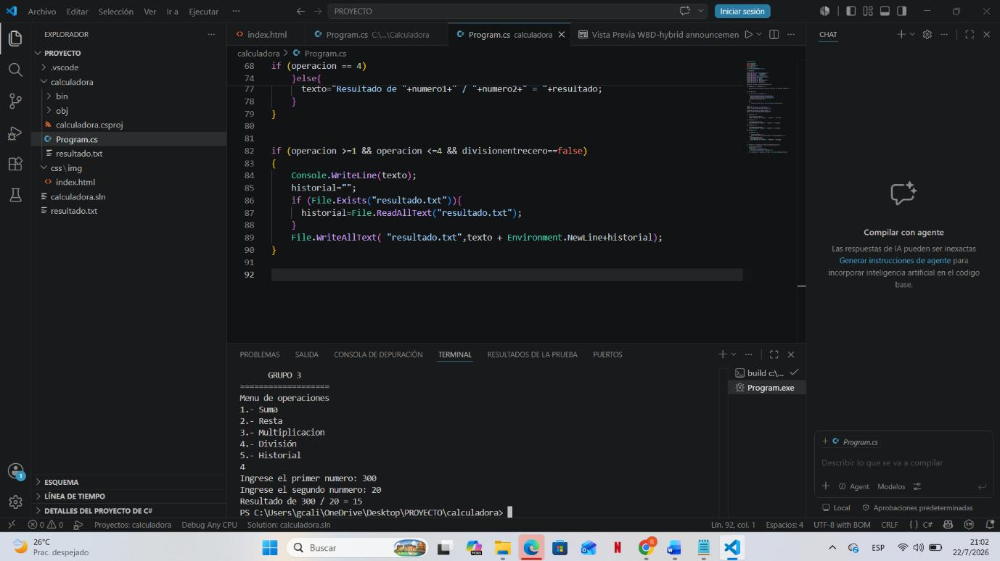
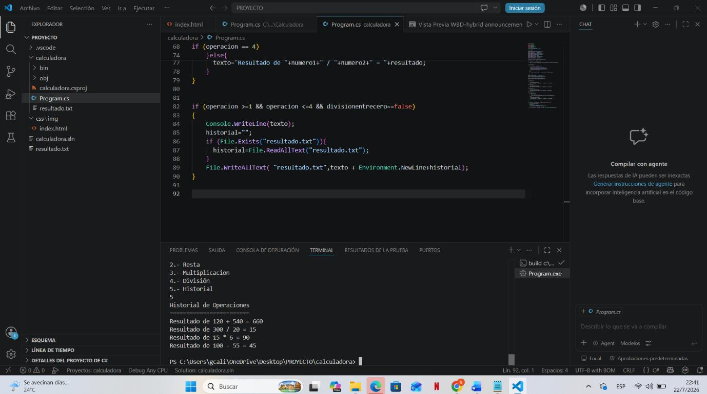

MANUAL DE EJECUCIÓN Y
PRUEBAS FUNCIONALES
CALCULADORA EN VISUAL STUDIO CODE
━━━━━━━━━━━━━━━━━━━━━━━━━━━━━━━━━━━━

Documento de
apoyo para la validación de operaciones aritméticas
y consulta del historial de resultados
|
Tipo de documento |
Manual de usuario y pruebas |
|
Aplicación |
Calculadora de consola |
|
Entorno |
Visual Studio Code / Terminal integrada |
|
Versión del manual |
1.0 |
|
Versión |
Fecha |
Descripción |
Estado |
|
1.0 |
Julio de 2026 |
Emisión inicial del manual de ejecución y pruebas. |
Vigente |
1. Introducción
2. Objetivo
3. Alcance
4. Requisitos previos
5. Estructura del proyecto
6. Ejecución del programa
7. Prueba de suma
8. Prueba de resta
9. Prueba de multiplicación
10. Prueba de división
11. Consulta del historial
12. Matriz de resultados
13. Buenas prácticas y solución de problemas
14. Conclusiones
|
Resultado esperado Al finalizar este procedimiento, el usuario podrá ejecutar la calculadora desde Visual Studio Code, seleccionar cualquiera de sus cinco opciones, ingresar valores numéricos, comprobar los resultados obtenidos y consultar el historial de operaciones realizadas. |
Este manual describe el procedimiento para abrir, ejecutar y probar una calculadora desarrollada como aplicación de consola. Las pruebas se realizan desde Visual Studio Code mediante la terminal integrada y permiten validar las operaciones de suma, resta, multiplicación y división, además de comprobar el funcionamiento del historial.
Orientar al usuario paso a paso en la ejecución del proyecto y documentar pruebas funcionales que demuestren que cada opción del menú produce el resultado esperado.
El documento cubre la apertura del proyecto, la ejecución con el comando dotnet run, la selección de opciones del menú, el ingreso de números, la verificación de resultados y la consulta del historial. No incluye la instalación de Visual Studio Code ni el desarrollo completo del código fuente.
Antes de comenzar, se debe contar con Visual Studio Code, el entorno .NET necesario para ejecutar el proyecto y acceso a la carpeta donde se encuentran los archivos de la calculadora. También se recomienda cerrar ejecuciones anteriores para evitar confusión en la terminal.
|
Importante Las capturas del borrador muestran una aplicación de consola con cinco opciones: 1) Suma, 2) Resta, 3) Multiplicación, 4) División y 5) Historial. En cada prueba se debe presionar Enter después de seleccionar la opción y después de escribir cada número. |
Localice la carpeta del proyecto desde el Explorador de archivos. En el borrador se observan los archivos principales Program y Calculadora, un archivo de resultados y las carpetas bin y obj, generadas durante la compilación.

Figura 1. Archivos y carpetas principales del proyecto de calculadora.
|
Descripción de elementos Program contiene el punto de entrada de la aplicación; Calculadora reúne la lógica de las operaciones; resultado corresponde al archivo de texto utilizado para almacenar o consultar operaciones; bin y obj son carpetas creadas por .NET durante la compilación. |
Abra la carpeta del proyecto en Visual Studio Code. Después, utilice la terminal integrada y ejecute el comando dotnet run. Cuando el programa inicie correctamente, aparecerá el encabezado de la calculadora y el menú de operaciones.

Figura 2. Proyecto abierto en Visual Studio Code con la terminal integrada.
Figura 3. Menú principal de la calculadora después de ejecutar dotnet run.
|
Comando de ejecución Escriba exactamente: dotnet run y presione Enter. La terminal debe estar ubicada dentro de la carpeta que contiene el proyecto. |
Esta prueba verifica que el programa agregue correctamente dos valores numéricos.
|
Etapa |
Acción |
Dato |
|
Selección |
Escriba 1 y presione Enter. |
1 |
|
Primer valor |
Cuando aparezca la solicitud del primer número, escriba 120 y presione Enter. |
120 |
|
Segundo valor |
Escriba 540 y presione Enter. |
540 |
|
Validación |
Confirme que la terminal muestre un resultado igual a 660. |
660 |

Figura 4. Resultado de la prueba de suma: 120 + 540 = 660.
|
Criterio de aprobación La prueba se considera aprobada cuando el resultado mostrado por el programa es 660. |
Esta prueba comprueba que el programa reste el segundo valor al primero.
• Escriba 2 y presione Enter para seleccionar Resta.
• Ingrese 100 como primer número.
• Ingrese 55 como segundo número.
• Verifique que el resultado sea 45.

Figura 5. Resultado de la prueba de resta: 100 − 55 = 45.
|
Criterio de aprobación La prueba se considera aprobada cuando el resultado mostrado por el programa es 45. En el borrador original se utilizó la palabra “suma” por error; en esta sección el resultado corresponde a una resta. |
Esta prueba valida que el programa multiplique correctamente los dos números ingresados.
• Escriba 3 y presione Enter para seleccionar Multiplicación.
• Ingrese 15 como primer número.
• Ingrese 6 como segundo número.
• Verifique que el resultado sea 90.

Figura 6. Resultado de la prueba de multiplicación: 15 × 6 = 90.
|
Criterio de aprobación La prueba se considera aprobada cuando el programa muestra 90 como resultado de multiplicar 15 por 6. |
Esta prueba confirma que el programa divida el primer número entre el segundo.
• Escriba 4 y presione Enter para seleccionar División.
• Ingrese 300 como primer número.
• Ingrese 20 como segundo número.
• Verifique que el resultado sea 15.

Figura 7. Resultado de la prueba de división: 300 ÷ 20 = 15.
|
Criterio de aprobación La prueba se considera aprobada cuando el resultado mostrado es 15. Para evitar errores, nunca utilice cero como segundo número en una división. |
La opción Historial permite revisar las operaciones registradas durante la sesión o almacenadas por la aplicación.
• En el menú principal, escriba 5.
• Presione Enter.
• Revise la lista de operaciones y confirme que aparezcan los resultados obtenidos en las pruebas anteriores.

Figura 8. Consulta del historial con las operaciones realizadas.
|
Resultado esperado El historial debe mostrar las operaciones efectuadas, incluyendo los valores ingresados y sus resultados: 660, 45, 90 y 15. |
|
Opción |
Operación |
Valor 1 |
Valor 2 |
Esperado |
Estado |
|
1 |
Suma |
120 |
540 |
660 |
Aprobada |
|
2 |
Resta |
100 |
55 |
45 |
Aprobada |
|
3 |
Multiplicación |
15 |
6 |
90 |
Aprobada |
|
4 |
División |
300 |
20 |
15 |
Aprobada |
|
5 |
Historial |
— |
— |
Lista visible |
Aprobada |
|
Situación |
Acción recomendada |
|
La terminal no reconoce dotnet |
Confirme que .NET esté instalado y reinicie Visual Studio Code después de la instalación. |
|
No aparece el menú |
Verifique que la terminal se encuentre en la carpeta correcta del proyecto y vuelva a ejecutar dotnet run. |
|
El programa no acepta el valor |
Ingrese únicamente números y presione Enter después de cada dato. |
|
La división genera error |
Compruebe que el segundo número sea diferente de cero. |
|
El historial aparece vacío |
Realice al menos una operación antes de seleccionar la opción 5 y confirme que el archivo de resultados pueda escribirse. |
|
Resultados inesperados |
Revise que la opción del menú y los números ingresados coincidan con el caso de prueba. |
• Ejecutar una prueba a la vez y registrar el resultado.
• Utilizar datos sencillos que permitan comprobar manualmente la operación.
• Conservar las capturas como evidencia de la prueba.
• No modificar el código mientras se realiza una validación formal.
• Volver al menú principal antes de seleccionar una operación diferente.
Las pruebas documentadas confirman el funcionamiento de las cinco opciones disponibles en la calculadora. Los resultados observados para suma, resta, multiplicación y división coinciden con los valores esperados, y la opción Historial permite consultar las operaciones efectuadas. Por tanto, la aplicación cumple satisfactoriamente con el alcance funcional evaluado en este manual.
|
Resumen final Suma: 660 | Resta: 45 | Multiplicación: 90 | División: 15 | Historial: disponible |